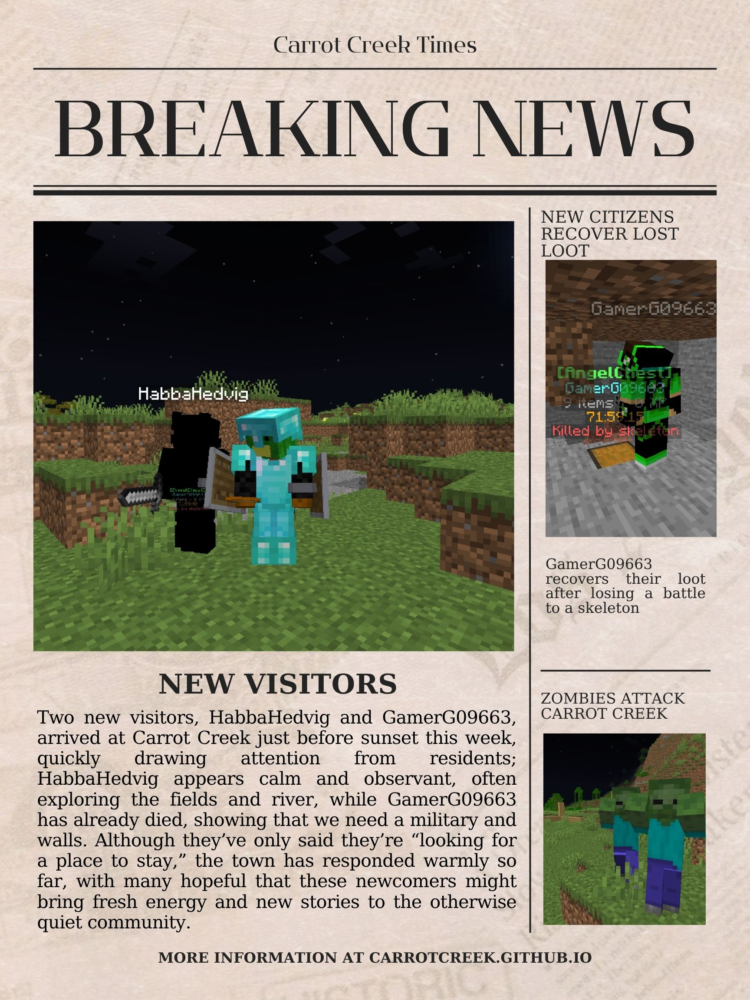
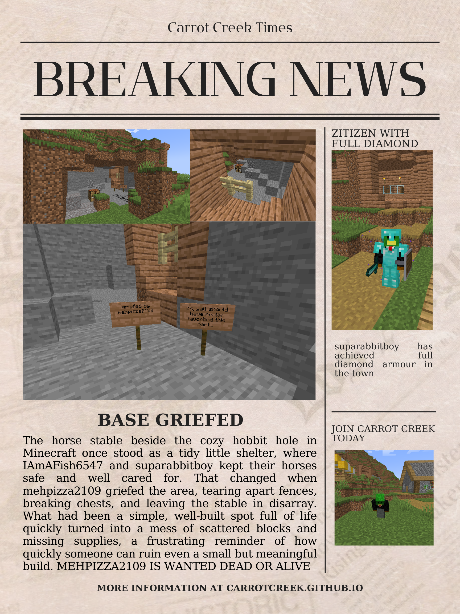
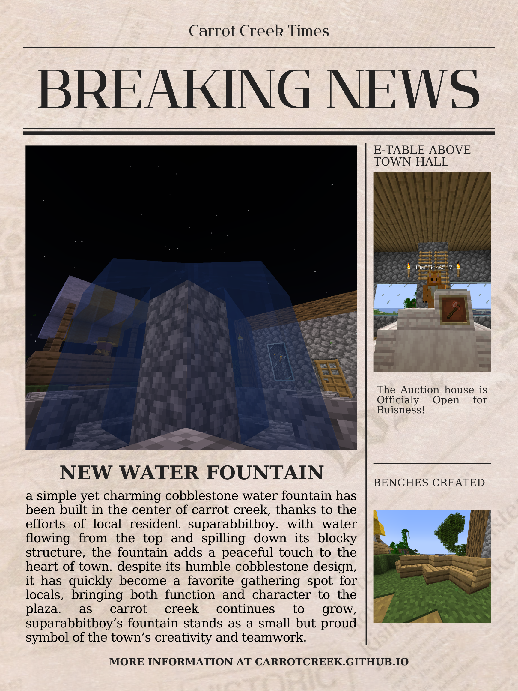
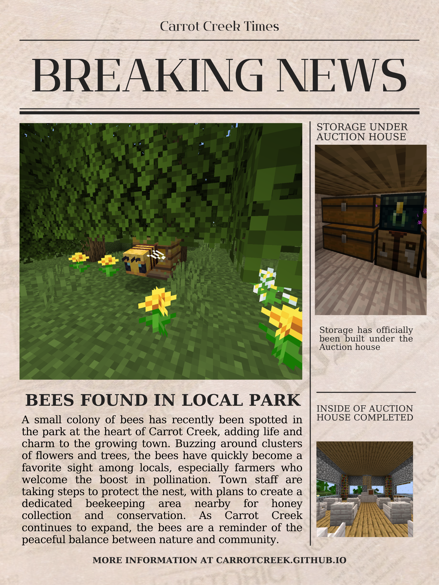

New Visitors!
We would like to apologize for any spelling mistakes in the articles
March 26, 2026
Article 8

We would like to welcome some new visitors to the town, GamerG09663 and HabbaHedvig.
Where cozy builds and great friends meet
March 26, 2026
Article 8

We would like to welcome some new visitors to the town, GamerG09663 and HabbaHedvig.
March 26, 2026
Article 7

suparabbitboy's base has been griefed by a player, the griefer has been identified as mehpizza2109
March 26, 2026
Article 6

A new water fountain has been installed in the center of Carrot Creek, providing a refreshing spot for residents and visitors.
August 8, 2025
Article 5

The first shop in Carrot Creek has been Opened up, run by IAmAFish6547, selling carrots.
August 8, 2025
Article 4

A small colony of bees has recently been spotted in the park at the heart of Carrot Creek, adding life and charm to the growing town.